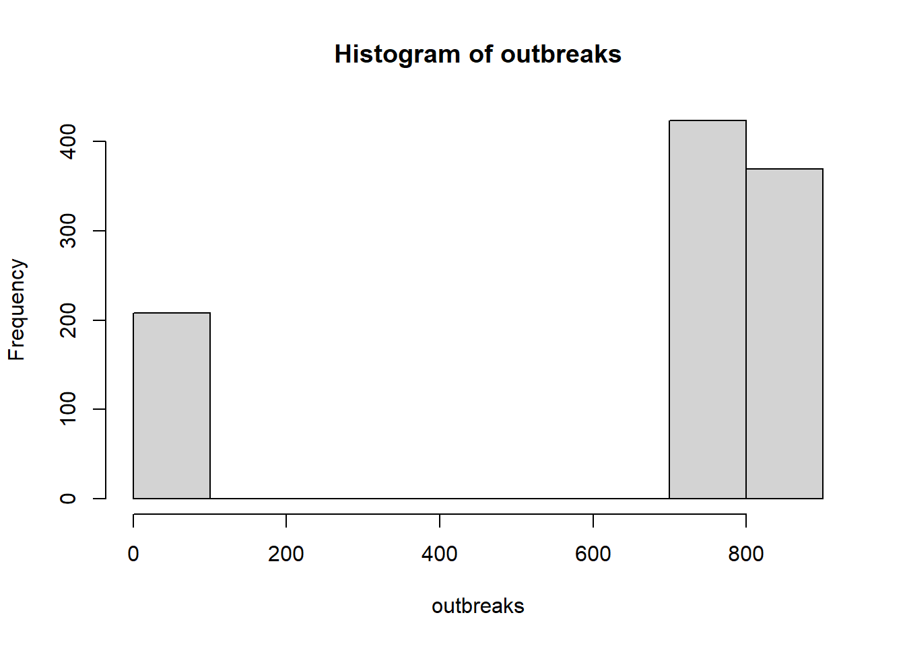

In the branching process model, the number of secondary infections is realized as a random number (e.g., Poission or Negative binomial).
set.seed(42)R0_mean <-2popsize =1000# population size for each iterationnrun <-1000# number of iterations to compute the meanoutbreaks <-rep(NA, nrun) # to store outbreak size for each iterationinit_inf <-1# initially infected peoplefor (r inseq_len(nrun)) { pop <-data.frame(id=1:popsize) pop$status <-"S" pop$status[1:init_inf] <-"I" nS <-sum(pop$status =="S") nI <-sum(pop$status =="I") N <-nrow(pop) cnt <- init_inf +1# infecteds are placed from the first positionwhile (nI >0& nS >0) { row <-which(pop$status =="I") nI <-length(row)for (i inseq_len(nI)) { pop$status[row[i]] <-"R" offspring <-rpois(1, lambda=R0_mean*nS/N) nS = nS - offspringfor (k inseq_len(offspring)) { pop$status[cnt] <-"I" cnt <- cnt +1 } } } outbreaks[r] = popsize -sum(pop$status =="S")}hist(outbreaks) # minor and major outbreaks

sum(outbreaks>200)/nrun # freq of major outbreaks
[1] 0.792
mean(outbreaks[outbreaks>200])/popsize # outbreak size of the only major outbreaks
[1] 0.7966742
max(outbreaks) # maximum outbreak size
[1] 853
Final epidemic size
To make sure that my branching process model makes sense, let’s compare the final size of an epidemic. As shown in the previous post, for the \(SIR\) model in a well-mixed population, the final epidemic size, \(R(\infty)\) is given as follows: \[R(\infty) = 1 − \text{exp}\left[-R_0R(\infty)\right]\]
# final size of an epidemic, Rfinal_size <-function(R, R0){ R -1+exp(-R0*R)}# lower bound set at a positive number to avoid R=0, which is also a solutionuniroot(final_size, interval=c(1e-3,1), R0=R0_mean)$root
[1] 0.7968115
Negative binomial distribution
What would happen if I allow the negative binomial distribution for the offspring
set.seed(42)R0_mean <-2R0_size <-0.2# loosely based on the estimate for Ebola (see Kucharski et al. 2016 https://wwwnc.cdc.gov/eid/article/22/1/15-1410_article)popsize =1000# population size for each iterationnrun <-1000# number of iterations to compute the meanoutbreaks <-rep(NA, nrun) # to store outbreak size for each iterationinit_inf <-1# initially infected peoplefor (r inseq_len(nrun)) { pop <-data.frame(id=1:popsize) pop$status <-"S" pop$status[1:init_inf] <-"I" nS <-sum(pop$status =="S") nI <-sum(pop$status =="I") N <-nrow(pop) cnt <- init_inf +1# infecteds are placed from the first positionwhile (nI >0& nS >0) { row <-which(pop$status =="I") nI <-length(row)for (i inseq_len(nI)) { pop$status[row[i]] <-"R" offspring <-rnbinom(1, mu=R0_mean*nS/N, size=R0_size) nS = nS - offspringfor (k inseq_len(offspring)) { pop$status[cnt] <-"I" cnt <- cnt +1 } } } outbreaks[r] = popsize -sum(pop$status =="S")}hist(outbreaks) # minor and major outbreakssum(outbreaks>200)/nrun # freq of major outbreaksmean(outbreaks[outbreaks>200])/popsize # only major outbreaksmax(outbreaks) # maximum outbreak size